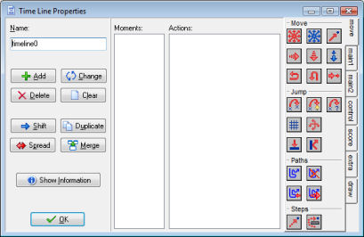

Time lines
In many games certain things must happen at certain moments in time. You can
try to achieve this by using alarm events but when things get too
complicated this won't work any more. The time line resource is meant for
this. In a time line you specify which actions must happen at certain
moments in time. You can use all the actions that are also available for the
different events. Once you create a time line you can assign it to an
instance of an object. This instance will then execute the actions at the
indicated moments of time. Let us explain this with an example. Assume you
want to make a guard. This guard should move 20 time steps to the left, then
10 upwards, 20 to the right, 10 downwards and then stop. To achieve this you
make a time line where you start with setting a motion to the left. At
moment 20 you set a motion upward, at moment 30 a motion to the right, at
moment 50 a motion downwards and at moment 60 you stop the motion. Now you
can assign this time line to the guard and the guard will do exactly what
you planned. You can also use a time line to control your game more
globally. Create an invisible controller object, create a time line that at
certain moments creates enemies, and assign it to the controller object. If
you start to work with it you will find out it is a very powerful concept.
To create a time line, choose Create Time Line from the Resources menu.
The following form will pop up.

It looks a bit like the object properties form. At the left you can set the
name and there are buttons to add and modify moments in the time line. Next
there is the list of moments. This list specifies the moments in time steps
at which assigned action(s) will happen. Then there is the familiar list of
actions for the selected moment and finally there is the total set of
actions available.
At the left you can use the following buttons:
- Add. Use this to add a moment to the time line. You must indicate the moment, which
is the number of steps since the time line was started. Now you can
drag actions to the list as for object events.
- Change. Use this button to change the time steps for the currently selected moment.
- Delete. Use this button to delete a moment or a range of moments. You must indicate the time step
of the first moment to delete and the last one. All moments in between will be deleted.
- Clear. Use this button to clear the entire list of moments.
- Shift. Use this button to shift a range of moment to a new moment. You must indicate
the start of the range, the end of the range, and the new time step to which the start of the
range must be shifted. When different moments become the same their action lists will be merged.
- Duplicate. This is almost the same as the shift button but in this case a copy of the moments
are made.
- Spread. Use this button to spread out a range of moments by adding time between them or put them
closer together by removing time between them. You specify the start and the end of the range and the percentage
for the spread. A percentage of 100 means nothing changes. For values smaller than 100 the moments are moved closer
together and for values larger than 100 they are moved further apart. For example if you have moments at timesteps 5, 8,
and 12 and you indicate as range 5:12 and a percentage 200, the moments will move to time steps 5, 11, and 19.
(The intervals between them have doubled.) When different moments become the same their action lists will be merged.
- Merge. Use this button to merge a number of moments into a single one. You specify the start and the
end of the range and they will all be merged into the start moment.
Make sure you do not create negative time moments. They will
never be executed.
There is also a button Show Information that shows the time line in a readable form.
There are a number of actions related to time lines. You can find them in the section on
More Main Actions.